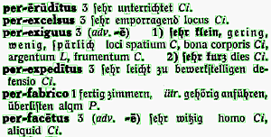
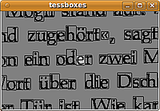
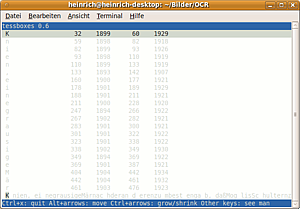
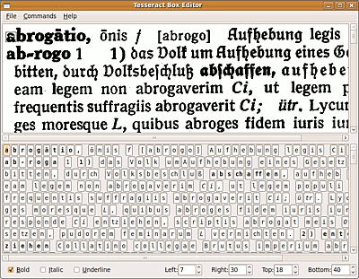

tesseract-ocr trainieren
Archivierte Anleitung
Dieser Artikel wurde archiviert, da er - oder Teile daraus - nur noch unter einer älteren Ubuntu-Version nutzbar ist. Diese Anleitung wird vom Wiki-Team weder auf Richtigkeit überprüft noch anderweitig gepflegt. Zusätzlich wurde der Artikel für weitere Änderungen gesperrt.
Zum Verständnis dieses Artikels sind folgende Seiten hilfreich:
tesseract-ocr lässt sich für neue Sprachen "anlernen"  ; der Prozess ist allerdings recht aufwendig und verlangt sehr exaktes Arbeiten. Die benötigten Programme sind in einer tesseract-ocr-Installation bereits vorhanden. Viele Schritte sind nur in "Handarbeit" zu bewerkstelligen, allerdings gibt es einige Hilfsmittel zur Erleichterung (spezielle Editor-Programme, ein Skript, um benötigte Dateien direkt aus XSane heraus anzulegen.) Theoretisch kann auch für eine bestehende Sprache die Erkennung erweitert werden, allerdings kann der Prozess fast genauso aufwändig wie eine Neuerstellung sein.
; der Prozess ist allerdings recht aufwendig und verlangt sehr exaktes Arbeiten. Die benötigten Programme sind in einer tesseract-ocr-Installation bereits vorhanden. Viele Schritte sind nur in "Handarbeit" zu bewerkstelligen, allerdings gibt es einige Hilfsmittel zur Erleichterung (spezielle Editor-Programme, ein Skript, um benötigte Dateien direkt aus XSane heraus anzulegen.) Theoretisch kann auch für eine bestehende Sprache die Erkennung erweitert werden, allerdings kann der Prozess fast genauso aufwändig wie eine Neuerstellung sein.
Hinweis:
Der Trainingsprozess hat sich ab Version 3.00 verändert, siehe TrainingTesseract3 ; dieser Artikel bezieht sich nur auf Version 2.0x !
Installation¶
Benötigt[1] werden die Pakete
tesseract-ocr
tesseract-ocr-<langid>, optional, wenn auf bestehende Sprachen/Bestandteile aufgebaut werden soll
libtiff-dev, optional, um "compressed" oder mehrseitige .tif-Dateien verwenden zu können
Funktionsweise¶
 tesseract-ocr "erkennt" Zeichen auf folgende Weise: Alle als mögliche Zeichen erkannte Elemente einer Vorlage werden von je einem rechteckigen Rahmen umgeben, deren Inhalt mit vorliegenden "Zeichen-Prototypen" verglichen werden. Der Prototyp mit der größten Übereinstimmung wird als erkanntes Zeichen ausgegeben; Zweifelsfälle lassen sich in der Datei <langid>.DangAmbigs beschreiben. Außerdem stützt sich die Erkennung auf Wörterbuchdateien, die in einem bestimmten Format vorliegen müssen; tesseract-ocr greift zur Abgrenzung der einzelnen Wörter u.a. auf diese Listen zurück.
tesseract-ocr kann nur Schriften verarbeiten, die getrennte Zeichen verwenden, die Lese-Richtung muss von links nach rechts verlaufen. Zur Ausgabe können alle Unicode-Zeichen verwendet werden, die in UTF-8 codiert sind; die in einem Sprach-Set verwendbaren Zeichen müssen (in der Datei <langid>.unicharset) definiert sein.
Ein vollständiges Sprachen-Set besteht aus acht Dateien, die im Normalfall im Verzeichnis /usr/share/tesseract/tessdata abgelegt werden:
| tesseract-Sprachen-Set | |
| Name | Funktion |
| <langid>.freq-dawg | Wortliste der häufig verwendeten Wörter, muss mindestens ein Wort enthalten |
| <langid>.word-dawg | Wortliste der übrigen Wörter, muss mindestens ein Wort enthalten |
| <langid>.user-words | persönliche Wortliste für spezielle Wörter, kann leer sein |
| <langid>.inttemp | Index des Zeichen-Sets |
| <langid>.normproto | normalisierte Prototypen der Zeichen |
| <langid>.pffmtable | Anzahl der zu erwartenden Eigenschaften der Zeichen |
| <langid>.unicharset | tatsächlich verwendetes Zeichen-Set |
| <langid>.DangAmbigs | Verzeichnis der leicht verwechselbaren Zeichen |
Vorlagen erstellen¶
Die Vorlagen müssen als .tif-uncompressed-Format vorliegen, ggf. können mehrseitige .tif-Dateien verwendet werden. Die besten Ergebnisse werden mit Vorlagen erzielt, bei denen sowohl der Abstand zwischen den Zeichen als auch den Reihen deutlich ist; als Beispiele können die in den box.tiff-Archiven  verwendeten Vorlagen dienen. Dabei sollten die Zeichen möglichst "realitätsnah" verwendet werden, also gebräuchliche Wörter und keine gehäufte Verwendung von Sonderzeichen beinhalten. Für eine universelle Verwendung sollten die Vorlagen möglichst in den gebräuchlichsten Fonts erstellt werden; es sind bis zu 32 verschiedene Schriftarten für eine Sprache möglich (dabei auch Vorlagen für jeweils fette und kursive Varianten erstellen). Wer tesseract-ocr für ein bestimmtes Projekt trainieren will, sollte natürlich möglichst nur die verwendeten Schriftarten trainieren, diese aber umso "intensiver".
verwendeten Vorlagen dienen. Dabei sollten die Zeichen möglichst "realitätsnah" verwendet werden, also gebräuchliche Wörter und keine gehäufte Verwendung von Sonderzeichen beinhalten. Für eine universelle Verwendung sollten die Vorlagen möglichst in den gebräuchlichsten Fonts erstellt werden; es sind bis zu 32 verschiedene Schriftarten für eine Sprache möglich (dabei auch Vorlagen für jeweils fette und kursive Varianten erstellen). Wer tesseract-ocr für ein bestimmtes Projekt trainieren will, sollte natürlich möglichst nur die verwendeten Schriftarten trainieren, diese aber umso "intensiver".
.box-Dateien erstellen¶
Aus den Vorlagen werden nun die sog. .box-Dateien erstellt[2]:
tesseract <fontfile>.tif <fontfile> [-l <langid>] batch.nochop makebox
Dabei kann eine vorliegende Sprache verwendet werden (sinnvoll, wenn z.B. eine spezielle Version für ein existierendes Sprach-Set oder eine Sprache mit ähnlichem Zeichensatz erstellt werden soll). Die dabei entstehende fontfile.txt-Datei muss im Anschluss in fontfile.box umbenannt werden.
Diese Datei beinhaltet die jeweils erkannten Zeichen und die Koordinaten der es umgebenden Box (optional kann für mehrseitige .tif-Dateien eine weitere Spalte mit der jeweiligen Seitenzahl verwendet werden, allerdings haben einige Hilfsprogramme Probleme, diese Versionen zu bearbeiten). "0,0" ist dabei die Koordinate der unteren linken Ecke der gesamten Vorlage, erstes Paar jeder Zeile: linke untere Ecke, zweites Paar: rechte obere Ecke des Zeichens:
1 2 3 4 5 6 7 8 9 10 11 12 13 14 | D 101 503 131 534 e 135 501 154 527 r 158 503 173 526 , 197 496 205 507 , 206 496 214 508 s 220 499 236 524 c 239 499 258 523 h 262 500 284 532 n 288 500 310 524 e 313 499 332 523 l 336 500 347 533 l 352 500 363 532 e 367 499 386 524 " 389 520 407 532 |
Diese Listen müssen nun so angepasst werden, dass am Anfang der Zeile das tatsächlich verwendete Zeichen steht, welches zunächst ggf. von tesseract-ocr nicht korrekt erkannt worden ist. Theoretisch sollte jedes Zeichen in einer Box stehen, z.T. müssen Boxen aber getrennt oder zusammengeführt (hier z.B. die Zeilen 5 und 6) und in ihrer Größe verändert werden. Diese aufwendige Arbeit wird sinnvollerweise mit Hilfsmitteln bewerkstelligt.
<langid>.DangAmbigs-Datei erstellen¶
Bei dieser Überprüfung kann schon an der Datei <langid>.DangAmbigs gearbeitet werden[3], in der die leicht verwechselbaren Zeichen aufgeführt werden. Dabei handelt es sich um eine einfache Text-Datei, die in vier Spalten aufgeteilt ist, z.B.:
1 2 3 4 5 6 7 8 9 10 11 12 | 1 f 1 t 1 a 1 o 1 o 1 a 1 e 1 c 1 c 1 e 2 r r 1 n 1 E 2 f i 2 l < 1 k 2 l d 2 k i 2 l x 1 h 2 x n 1 m 2 u x 2 i n |
In der ersten Spalte steht die Anzahl, in der zweiten das bzw. die falsch erkannten Zeichen. In der dritten Zeile werden die richtige Anzahl der Zeichen, in der vierten die tatsächlich gemeinten Zeichen eingetragen. Die Erstellung muss von Hand erfolgen, die Datei darf leer sein, eine exakte <langid>.DangAmbigs-Datei ("dangerous ambiguities", gefährliche Doppeldeutigkeiten) kann aber zu einer genauen Zeichenerkennung beitragen. Das gilt auch zum "einfachen" Training für bereits bestehende Sprach-Sets.
Trainingslauf durchführen¶
Wenn genügend .box-Dateien erstellt und vorbereitet sind, wird tesseract-ocr für jedes .tif/.box-Paar im Trainingsmodus gestartet. Dazu wird der Befehl
tesseract fontfile.tif junk nobatch box.train &> Errors.txt
verwendet.
Ausgegeben wird eine fontfile.tr-Datei, die die Merkmale jedes Zeichens der .box-Datei enthält; der Ausgabename entspricht dem der Eingabe-.tif. Die fontfile.tif- und -.box-Dateien müssen dazu im selben Verzeichnis liegen, ansonsten findet tesseract-ocr sie nicht. Außerdem gibt der Befehl alle auftretenden (Fehler-)Meldungen auf stderr aus, die dann in eine Log-Datei (hier Error.txt) umgeleitet werden. Die leere, ebenfalls entstehende junk.txt-Datei ist ein nicht benötigtes "Abfallprodukt".
Wichtig ist, die Log-Datei gründlich zu überprüfen und ggf. auftretende Fehler (FAILURES/FATALITIES) in der .box-Datei zu korrigieren. FATALITIES müssen korrigiert werden, sie weisen darauf hin, dass für eines der in der .box-Datei aufgeführten Zeichen kein Trainings-Sample gefunden wurde. Entweder stimmen die Koordinaten nicht, oder es liegt ein Fehler in dem Bild des betroffenen Zeichens vor. Dann kann das Zeichen nicht erkannt werden, und die generierte .inttemp-Datei stimmt später nicht mit der .unicharset-Datei überein - tesseract-ocr würde dann abstürzen.
Ein weiterer Fehler, der behoben werden muss (Ausgabe Bad utf-8 char... gefolgt von Box file format error on line n o.ä.), deutet auf Verwendung eines falschen UTF-8-Codes hin. Andere Fehlerausgaben zum .box-Datei-Format sind meist auf Fehler in den Koordinaten der Box oder eine leere Zeile in der Datei zurückzuführen. Leere Zeilen sind dabei harmlos, der Fehler wird vorsichtshalber trotzdem ausgegeben.
Fehlerlos entstandene fontfile.tr-Dateien brauchen nicht weiter bearbeitet zu werden, sondern können so verwendet werden.
Clustering¶
Nachdem die Zeichenmerkmale aller Trainings-Vorlagen ausgelesen sind, müssen sie zusammengefasst werden, um die Prototypen zu erstellen. Dazu werden die Programme mftraining und cntraining verwendet:
mftraining fontfile_1.tr fontfile_2.tr ...
Dabei werden zwei Dateien ausgegeben: .inttemp (die Form-Prototypen) und .pffmtable (beinhaltet die Anzahl der zu erwartenden Merkmale jedes einzelnen Zeichens) (die dritte ausgegeben Datei Microfeat wird nicht benötigt).
Der Befehl
cntraining fontfile_1.tr fontfile_2.tr ...
gibt die .normproto-Datei aus, in der die normalisierten Zeichen-Prototypen zur Erkennung gespeichert sind.
Die Dateien müssen jeweils um den <langid.>-Wert ergänzt werden.
Erstellung des spezifischen Zeichen-Satzes¶
Um festzulegen, welcher Zeichensatz ausgegeben werden kann, müssen mit dem unicharset_extractor-Programm alle .box-Dateien der zum "Clustering" verwendeten Vorlagen (in der entsprechenden Reihenfolge!) bearbeitet werden:
unicharset_extractor fontfile_1.box fontfile_2.box ...
tesseract-ocr benötigt Informationen zu den Zeichen-Eigenschaften isalpha (Buchstabe), isdigit (Zahl), isupper (Großschreibung), islower (Kleinschreibung). Jede Zeile der .unicharset-Datei entspricht einem Zeichen; hinter dem eigentlichen Zeichen steht eine Hexadezimal-Zahl, die eine binäre Maske aller Eigenschaften darstellt. Jedes Bit repräsentiert eine Eigenschaft, 1 steht für das jeweilige Vorhandensein. Die Bits sind aufsteigend nach Signifikanz der Eigenschaften geordnet: isalpha, islower, isupper, isdigit.
Beispiele:
"
;" ist kein Buchstabe, weder klein noch groß geschrieben" und auch keine Zahl. Seine Eigenschaften werden daher durch die Binärzahl "0000" wiedergegeben; hexadezimal "0"."
b" ist ein klein geschriebener Buchstabe; seine Eigenschaften werden durch die Binärzahl "0011" (hexadezimal "3") wiedergegeben."
W" ist ein groß geschriebener Buchstabe; seine Eigenschaften werden durch die Binärzahl "0101" (hexadezimal "5") wiedergegeben."
7" ist nur eine Zahl, seine Eigenschaften werden daher durch die Binärzahl "1000" (hexadezimal "8") wiedergegeben.
In der .unicharset-Datei stünde entsprechend:
1 2 3 4 | ; 0 b 3 W 5 7 8 |
Die .unicharset-Datei muss bei jeder Neuerstellung der .inttemp-, .normproto- und .pffmtable-Dateien (also bei jeder Veränderung an den .box-Dateien) aktualisiert werden, damit sie "synchronisiert" bleiben. Die Zeilen müssen in der richtigen Reihenfolge bleiben, da .inttemp einen Index in die .unicharset-Datei schreibt und die klassifizierten Zeichen auf diesem Index basieren.
Wörterbuchdateien¶
tesseract-ocr verwendet drei Wörterbuchdateien; zwei müssen als "Directed Acyclic Word Graph" (DAWG) codiert sein, die dritte als einfache in UTF-8 codierte Textdatei mit einem Wort pro Zeile. Um die DAWG-Wortlisten zu erstellen, wird eine Liste für die verwendete Sprache benötigt (Format wie oben; kann ggf. von ispell-dictionaries bezogen werden). Die Liste wird in einen Teil mit den häufig verwendeten Wörtern und einen mit den restlichen Wörtern aufgeteilt (diese Listen müssen jeweils mindestens ein Wort enthalten; natürlich wird die Spracherkennung mit umfangreichen Wörterbüchern wesentlich zuverlässiger), die DAWG-Dateien werden dann mit den Befehlen
wordlist2dawg frequent_words_list freq-dawg wordlist2dawg words_list word-dawg
generiert. Die Dateien müssen später in <langid>.freq-dawg bzw. <langid>.word-dawg umbenannt werden; wenn für eine bereits bestehende Sprache die Dateien gleich mit dem Sprachkürzel erstellt werden soll, muss die entsprechende <langid>.unicharset-Datei im selben Verzeichnis vorliegen und mit angegeben werden. Die Umwandlung selbst kann, je nach Größe der Wortliste, sehr lange (bis zu mehreren Stunden!) dauern und ist sehr "rechenintensiv".
Die dritte <langid>.user-words-Datei kann eigene Wörter (Fachjargon, Namen etc.) enthalten, darf aber auch leer sein. Wenn häufig Wörter mit Punkten o.ä. vorkommen (z.B. ubuntuusers.de), sollten diese so aufgenommen werden.
Wenn alle Dateien erstellt sind, werden sie in /usr/share/tesseract-ocr/tessdata abgelegt und können dann als neue oder angepasste Sprach-Version verwendet werden. Um auch von anderen Programmen erkannt werden zu können, sollte als Bezeichnung (<langid>) ein ISO 639-2-Kürzel verwendet werden.
Tipps und Tricks¶
Neue Sprachen vereinfachen¶
Das Training ganz neuer Sprachen vereinfacht sich, wenn zunächst der gesamte Prozess für eine gute Vorlage durchgeführt wird. Mit der erstellten vorläufigen Sprache wird dann die Erstellung für die weiteren Vorlagen erheblich erleichtert, weil die Erkennung schon wesentlich besser ist. Die weiteren .box-Dateien können dann mit
tesseract fontfile.tif fontfile -l <langid> batch.nochop makebox
erstellt werden. Allerdings können Probleme auftreten, wenn nicht für jedes Zeichen wenigstens drei Sample vorliegen.
Variationen/Kombinationen erstellen¶
Angepasste Versionen aus schon vorliegenden Sprach-Sets (z.B. aus den box.tiff-Archiven ) lassen sich etwas einfacher erstellen. Dazu können vorhandene Sprach-Sets kombiniert werden, aus bestehenden Sprachen "subsets" oder um bestimmte Zeichen oder Schriftarten erweiterte Versionen erstellt werden. Die Dateien liegen als G4-compressed-Versionen vor, die ggf., falls libtiff nicht verfügbar ist, extrahiert werden müssen, um sie verarbeiten zu können.
Bestehende .box-Dateien "filtern", also nur die benötigten Zeichen beibehalten
Trainingsläufe durchführen
Die <filefont>.tr-Dateien für jede Schriftart der verwendeten Sprachen aneinander hängen, um den gewünschten Zeichensatz zu erhalten ; ggf. eigene .tr-Dateien für Schriftarten oder Zeichen hinzufügen
Die gefilterten .box-Dateien entsprechend aneinander hängen, um sie mit dem
unicharset_extractorzu verarbeitenDie weiteren Schritte des Trainingsprozesses durchführen
Dieser Vorgang ist allerdings nicht ganz einfach. cntraining und mftraining können nur bis zu 32 .tr-Dateien verarbeiten. Daher müssen ggf. die Dateien aller Sprach-Sets für eine Schriftart zusammengefasst werden, um sprachübergreifende, aber "schriftarten-einheitliche" Dateien zu erhalten. Die Zeichen in den .tr-Dateien müssen in exakt der selben Reihenfolge wie in den .box-Dateien stehen, wenn sie an den unicharset_extractor übergeben werden. Das bedeutet, dass die .tr- und .box-Dateien in genau derselben Reihenfolge aneinander gehängt werden müssen.
Die Kommandozeilen für cntraining, mftraining und unicharset_extractor müssen entsprechend die .tr- bzw. .box-Dateien in identischer Reihenfolge übergeben, falls - was fast unweigerlich der Fall sein wird - unterschiedliche Filter-Auswahlen für die unterschiedlichen Schriftarten verwendet wurden. Sinnvoll wäre dafür ein Automatismus oder ein Programm, das die Auswahl der Zeichen anhand einer Zeichentafel ermöglichen würde; die identische Reihenfolge ließe sich ggf. mittels einer zu dem Zweck erstellten Textdatei realisieren, die, jeweils an .tr- bzw. .box-Endungen angepasst, per stdin an die Programme übergeben würde.
"Sprachen" aus Dokumenten erstellen¶
Einen Sonderfall stellt das Anlernen für vorliegende Dokumente dar - der Screenshot zu tesseractTrainer.py zeigt ein Beispiel, in dem tesseract-ocr zum Auslesen eines alten lateinisch-deutsch Lexikons angelernt werden soll. Die Idealbedingungen sind natürlich nicht gegeben, insbesondere die Empfehlung, keine Schriftarten zu mischen, lässt sich schwerlich realisieren (im Beispiel werden eine Fraktur-Schriftart, mit fett-Variante, für die deutschen Teile, und eine Serifen-Schrift in den Spielarten fett und kursiv für die lateinischen Textstellen verwendet; als weiteres Erschwernis kommen einzelne in griechischer Schrift geschriebene Wörter hinzu).
Entweder man versucht, entsprechende Schriftarten anderweitig zu finden, um daraus "vernünftige" Vorlagen zu erstellen, oder man extrahiert aus dem Dokument so umfangreiche Vorlagen, dass alle Zeichen häufig genug verwendet werden. Dabei muss ggf. auf einige Boxen verzichtet werden, wenn die Abstände zwischen den Zeichen zu klein sind und die Boxen ansonsten nicht trennscharf ausgegeben werden können. Dabei ist eine Überlappung der Boxen an sich nicht problematisch, allerdings darf eine Box sich nicht mit dem Zeichen in einer weiteren Box überschneiden. Außerdem lassen sich Zeichen, die so eng aneinander gedruckt sind, dass sie sich berühren, nicht trennen. In dem Fall können auch zwei (ggf. bis zu 4) Zeichen zusammengefasst werden.
Bei der Verwendung mehrerer Schriftarten, insbesondere wenn für dasselbe Zeichen sehr unterschiedliche Formen verwendet werden, können beim "Clustering" signifikante Eigenschaften aus den unterschiedlichen Schriftarten verwischen und damit die Erkennungsqualität herabsetzen. Allerdings werden bei ganz unterschiedlichen Schriftarten (z.B. griechisch/lateinisch) die Zeichen wieder besser erkannt, weil jeweils ganz andere Formen zum Einsatz kommen. Es kann aber auch zu Schwierigkeiten kommen, wenn in einem Sprach-Set mehr als 256 unterschiedliche Zeichen verwendet werden.
Mit ansonsten nicht verwendeten Sonderzeichen, die einzelnen Zeichen bei der Erkennung zusätzlich zugeordnet werden, lassen sich auch Formatierungsanweisungen "erkennen"; außerdem ist die Verwendung mehrerer Schriftarten in einer Trainingsvorlage damit etwas einfacher, weil weniger fehleranfällig (siehe tesseractTrainer.py). Allerdings greift dann die Worterkennung nicht mehr; es sei denn, man legt sich eine entsprechende "Wort"-Datei an, in der die Sonderzeichen mit integriert werden.
Sinnvoll ist es für derartige Fälle, sich zwei oder ggf. mehrsprachige Wörterbuchdateien zu erstellen.
Boxes-Hilfsmittel¶
Um die .box-Dateien zu bearbeiten, gibt es verschiedene Hilfsmittel, um den aufwendigen Prozess etwas zu vereinfachen.
xsane2boxes¶
Vorlagen können direkt aus XSane gescannt und als .box-Dateien mit den dazugehörigen .tif-Bildern (bzw. .pbm-Bildern, wenn tessboxes zum Einsatz kommen soll), erstellt werden. Benötigt wird dazu das Programm ImageMagick, um die Vorlage-Dateien automatisch in ein von tesseract-ocr lesbares .tif- bzw. .pbm-Format zu konvertieren (das von XSane verwendete kompressierte .tif-Format wird nicht erkannt, es sei denn, tesseract-ocr wurde mit libtiff-Unterstützung kompiliert). Das "Boxenerstellungswerkzeug" wird mit folgendem Skript eingebunden:
1 2 3 4 5 6 7 8 9 10 11 12 13 14 15 16 17 18 19 20 21 22 23 24 25 26 27 28 29 30 31 32 33 34 35 36 37 38 39 40 41 42 43 44 45 46 47 48 49 50 51 52 53 54 55 56 57 58 59 60 61 62 63 64 65 66 67 68 69 70 71 72 73 74 75 76 77 78 79 80 81 82 83 84 85 86 87 88 89 90 91 92 93 94 95 96 97 98 99 100 101 102 103 104 105 106 107 108 109 110 111 | #!/bin/bash # # ############################################################################## # # xsane2boxes 1.0 # # *** tesseract-boxes made "simple" (well, kind of ...) *** # # ############################################################################## # # xsane2boxes is a TesseractOCR wrapper to be able to produce boxes with xsane. # .box-files are needed to train TesseractOCR for new languages. # Corresponding .tif and .pbm-images are produced, too. # # # TEMP_DIR=~/tmp/ # folder for temporary files (TIFF & tesseract data) ERRORLOG="xsane2boxes.log" # file where STDERR goes if [[ -z "$1" ]] then echo "Usage: $0 [OPTIONS] xsane2boxes converts files to TIFF/PBM, scans them with TesseractOCR and outputs .tif/.pbm-files and the corresponding .box-files. OPTIONS: -i <file1> define input file (any image-format supported) -o <file2> define output-file (*.box) -l <langid> define language-data tesseract should use Progress- & error-messages will be stored in this logfile: $TEMP_DIR$ERRORLOG xsane2boxes depends on - ImageMagick http://www.imagemagick.org/ - TesseractOCR http://code.google.com/p/tesseract-ocr/ Some coding was stolen from 'ocube' http://www.geocities.com/thierryguy/ocube.html This script is based on xsane2tess, http://doc.ubuntu-fr.org/xsane2tess The very useful little application tessboxes (http://www.lbreyer.com/tessboxes.html) uses .pbm-files to work on .box-files. However, the temporary images used by XSane are not fit to produce .pbm-files tessboxes is able to use. Therefore a .tiff-file has to be produced before the conversion takes place; the script converts that to a usable .pbm-file. Hints on this odd fact and comments in general are welcome! heinrich (dot) schwietering (at) gmx (dot) de " exit fi # get options... while getopts ":i:o:l:" OPTION do case $OPTION in i) # input filename (with path) FILE_PATH="$OPTARG" FILE_PATH2="$OPTARG" ;; o ) # output filename FILE_OUT="$OPTARG" ;; l ) # Language-selection TES_LANG="$OPTARG" ;; esac done # prepare output-value to move .tif-image FILE_OUT2="${FILE_OUT%.*}" # redirect STDOUT to FILE_OUT exec 1>>$FILE_OUT # redirect STDERR to ERRORLOG exec 2>>$TEMP_DIR$ERRORLOG # strip path from FILE_PATH, use filename only IN_FILE=${FILE_PATH##*/} TIF_FILE="$TEMP_DIR""${IN_FILE%.*}".tif TXT_FILE="$TEMP_DIR""${IN_FILE%.*}" # converting image into TIFF (ImageMagick) convert "$FILE_PATH" -compress none "$TIF_FILE" 1>&2 # start tesseract to produce .box-file tesseract "$TIF_FILE" "$TXT_FILE" -l "$TES_LANG" batch.nochop makebox 1>&2 # STDOUT scanned text => FILE_OUT cat "$TXT_FILE".txt # save.tif-file as well `cp "$TIF_FILE" "$FILE_OUT2".tif` # produce pbm-file from final Xsane output convert "$FILE_OUT2".tiff "$FILE_OUT2".pbm # delete graphic file after use rm "$FILE_OUT2".tiff rm "$TIF_FILE" rm "$TXT_FILE".box # delete tesseract output rm "$TXT_FILE".txt |
Das Skript in einen Editor kopieren, unter xsane2boxes.sh o.ä. abspeichern und ausführbar[4] machen. Es basiert auf xsane2tess, das auf der französischen Ubuntu-Seite ubuntu-fr.org  veröffentlicht worden ist.
veröffentlicht worden ist.
Das Temporärverzeichenis (Zeile 19) muss entweder angelegt oder entsprechend den eigenen Wünschen abgepasst werden, dort wird auch die xsane2boxes.log-Datei abgelegt.
In "XSane -> Einstellung -> Konfiguration -> Texterkennung" wird als OCR-Befehl "/Pfad/zu/xsane2boxes.sh -l <langid> eingesetzt, als Option für die Eingabedatei werden "-i", für die Ausgabedatei "-o" angeben, die weiteren Felder bleiben leer.
Die Vorlage wird in XSane im Betrachter-Modus als "Strichzeichnung" mit einer Auflösung von mindestens 300 dpi erstellt. Wenn auch eine .pbm-Datei erstellt werden soll, muss das Bild im Betrachter zunächst abgespeichert werden. Erst dann die Texterkennung ( -Taste) wählen, der Ausgabename mit der Endung .box wird im OCR-Speicher-Dialog festgelegt - dabei ggf. auf den gleichen Namen und Nummerierung wie für die .pbm-Datei achten! Theoretisch lassen sich auch mehrere .box-Scans zu einer Datei aneinander hängen, wenn zum Abspeichern der selbe Name verwendet wird; das ist allerdings nur sinnvoll, wenn auch eine entsprechende mehrseitige .tif-Datei angelegt wird, was aber nicht gleichzeitig mit der Texterkennung erfolgen kann. Für .pbm-Dateien sind mehrseitige Vorlagen nicht möglich!
-Taste) wählen, der Ausgabename mit der Endung .box wird im OCR-Speicher-Dialog festgelegt - dabei ggf. auf den gleichen Namen und Nummerierung wie für die .pbm-Datei achten! Theoretisch lassen sich auch mehrere .box-Scans zu einer Datei aneinander hängen, wenn zum Abspeichern der selbe Name verwendet wird; das ist allerdings nur sinnvoll, wenn auch eine entsprechende mehrseitige .tif-Datei angelegt wird, was aber nicht gleichzeitig mit der Texterkennung erfolgen kann. Für .pbm-Dateien sind mehrseitige Vorlagen nicht möglich!
Falls Probleme auftauchen, liefert das angelegte Protokoll xsane2boxes.log ggf. Hinweise zur Lösung.
Die entstandenen .tif/.box- bzw .pbm/.box-Paare können dann mit tesseractTrainer.py bzw. tessboxes weiterverarbeitet werden.
tessboxes¶
tessboxes ist ein kleines Kommandozeilen-Werkzeug, um .box-Dateien zu bearbeiten. Es muss von der Projektseite heruntergeladen, entpackt[5] und kompiliert[6] werden; dazu benötigt man die Pakete
libslang2
libslang2-dev
xorg-dev
libreadline-dev
netpbm (optional, um eine Bild mit den Boxen erstellen zu können)
 mit apturl
mit apturl
Paketliste zum Kopieren:
sudo apt-get install libslang2 libslang2-dev xorg-dev libreadline-dev netpbm
sudo aptitude install libslang2 libslang2-dev xorg-dev libreadline-dev netpbm
Hinweis!
Fremdsoftware kann das System gefährden.
Die manpage des Programms liefert neben den Hinweisen zur Benutzung eine recht ausführliche Beschreibung des gesamten Spracherstellungsprozess.  tessboxes kann nur Dateien im .pbm-Format verarbeiten, die .tif-Dateien müssen also konvertiert werden (z.B. mit ImageMagick oder GIMP).
Der Aufruf des Editors erfolgt mit
tessboxes -e <Vorlage>.pbm <Vorlage>.box
Ggf. kann die Option "-g x,y" verwendet werden, um schnell eine bestimmte Box bearbeiten zu können. "x" und "y" sind dabei die Koordinaten der linken unteren Ecke einer Box, die z.B. eine Fehlermeldung bei der Weiterverarbeitung ausgibt.
Es öffnen sich ein kleines Betrachter-Fenster sowie eine Liste im Terminal; die Bedienung erfolgt über die Tastatur. Eine Änderung des Zeichens muss bei "mehrzeichigen" Eingaben mit ⏎ abgeschlossen werden. Die Speicherung erfolgt mit Strg + X , eine Bedienung mit der Maus ist nicht möglich.  Der Befehl
tessboxes image.pbm boxes | pnmtopng > image_with_boxes.png
erzeugt ein Bild der Vorlage, in dem die Boxen genau zu sehen sind (siehe den Screenshot am Anfang des Artikels). Wenn es zu Problemen bei der Weiterverarbeitung kommt, lässt sich anhand des Bildes ggf. feststellen, ob und wo sich Boxen mit Buchstaben in anderen Boxen überschneiden (siehe Trainingslauf durchführen).
| Tessboxes-Tastatur-Befehle | |
| Taste | Funktion |
| Strg + X | Editor beenden und .box-Datei speichern |
| Esc | Editor beenden ohne .box-Datei zu speichern |
| ↑ , ↓ , ← , → | Eine Box aus der Liste wählen |
| Einfg | eine neue leere Box vor der gewählten einfügen |
| Entf | gewählte Box löschen |
| Strg + ↑ , ↓ , ← , → | gewählte Box vergrößern oder verkleinern |
| Alt + ↑ , ↓ , ← , → | gewählte Box verschieben |
| Alt + S | gewählte Box verkleinern |
| Alt + C | gewählte Box zuschneiden (kann wiederholt verwendet werden) |
| Alt + A | Alle Boxen der Datei zuschneiden |
tesseractTrainer.py¶
tesseractTrainer.py ist ein in Python verfasstes Programm, mit dem komfortabel .box-Dateien bearbeitet und Einträge korrigiert werden können. Es bietet sehr hilfreiche Funktionen zum Vorbereiten des .box-Trainings. Leider hat der Entwickler die Arbeit an dem Skript, das er 2007 für ein eigenes Scan-Projekt entwickelt hatte, eingestellt.
Es kann von paste.ubuntuuusres.de bezogen werden. (Achtung: Im Gegensatz zu anderen Versionen dieses Quelltextes wurde diese hier an gewissen Stellen korrigiert.)
Hinweis!
Fremdsoftware kann das System gefährden.
Benötigt werden eine python-Installation (ist in jeder Standard-Ubuntu-Instalation enthalten), außerdem das Paket
python-numpy
mit apturl
Paketliste zum Kopieren:
sudo apt-get install python-numpy
sudo aptitude install python-numpy
Das Skript herunterladen, unter tesseractTrainer.py abspeichern und ausführbar machen.
 Nach Aufruf kann eine .tif-Datei, wenn die entsprechende .box-Datei im selben Verzeichnis existiert, über "File -> Open Image" oder Strg + O aufgerufen werden. Es lassen sich auch mehrere Dateien-Paare zusammenführen ("File -> Merge Text"). Im oberen Fenster wird die Vorlage angezeigt, das jeweils "aktive" Zeichen in einer Box. Durch die Boxen wird mit Tab ⇆ , ⇧ + Tab ⇆ , ↑ , ↓ navigiert.
Im unteren Fenster werden die erkannten Zeichen in den Boxen angezeigt, Veränderungen können über die Tastatur eingegeben werden. Es ist möglich, einer Box auch zwei (ggf. bis zu vier) Zeichen zuzuordnen, wenn sie sich nicht sauber trennen lassen. tesseractTrainer.py erlaubt es auch, die Formatierungsmerkmale fett ("bold"), kursiv ("italic") und unterstrichen ("underlined") mit anzugeben. Fett und kursiv können nur für ganze Wörter verwendet werden, unterstrichen auch für einzelne Buchstaben. Die Angabe der Formatierung kann allerdings nur "indirekt" erfolgen, da tesseract-ocr nur reinen Text ausgeben kann. Dazu werden die entsprechend markierten Symbole nach Abschluss des gesamten Trainings bei der Erkennung als "@<Zeichen>" (fett), "$<Zeichen>" (kursiv) oder "'<Zeichen>" (unterstrichen) wiedergegeben. In einem Textverarbeitungsprogramm (z.B. OpenOffice.org) können dann diesen Zeichenkombinationen die entsprechenden Formatierungen wieder zugewiesen und die "Steuerzeichen" dann wieder entfernt werden - Vorsicht aber, wenn in den zu konvertierenden Vorlagen diese Zeichen tatsächlich verwendet werden! Ggf. können im Skript auch andere, anderweitig nicht verwendete Zeichen benutzt werden.
Die Boxen lassen sich in der Größe anpassen, entweder über die Tastenkombinationen oder über die Eingabefenster unter der Boxen-Anzeige. Leider ist nicht ohne Weiteres sichtbar, ob Boxen sich mit Zeichen aus anderen Boxen überschneiden (das führt bei der Weiterverarbeitung zu Fehlern!), da immer nur die aktuelle Box angezeigt wird.
Nach Abschluss der Bearbeitung wird die .box-Datei mit "File -> Save Box Info" ( Strg + S ) gespeichert, beim einfachen Beenden ( Strg + Q ) werden Änderungen nicht übernommen!
| tesseractTrainer.py-Tasten, unteres Fenster | |
| Taste | Funktion |
| Strg + B | Ganzes Wort als fett markieren |
| Strg + I | Ganzes Wort als kursiv markieren |
| Strg + U | gewähltes Symbol als unterstrichen markieren |
| Strg + ↑ , ↓ , ← , → | Box nach oben, unten, links oder rechts vergrößern |
| Strg + ⇧ + ↑ , ↓ , ← , → | Box nach oben, unten, links oder rechts verkleinern |
| Strg + 1 | gewählte Box mit der nächsten verbinden |
| Strg + 2 | gewählte Box vertikal teilen |
| Strg + D | gewählte Box löschen |
Links¶
Exemplarische Beschreibung
zur SpracherstellungVerzeichnis von Wortlisten
, nützlich für die Wörterbuchdateientesseract-tools
Skripte zur Automatisierunmg des Trainingsvorgangs
- Erstellt mit Inyoka
-
 2004 – 2017 ubuntuusers.de • Einige Rechte vorbehalten
2004 – 2017 ubuntuusers.de • Einige Rechte vorbehalten
Lizenz • Kontakt • Datenschutz • Impressum • Serverstatus -
Serverhousing gespendet von